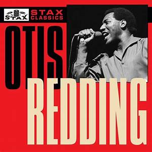
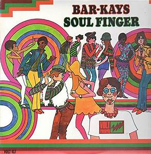

- 
- 


Stax Records was founded in 1957 by Him Stewart and co-owned with his sister, Estelle Axton, and was originally known as Satellite. In 1961 it took a new name, Stax, after the first two letters of their last names. Stax records was famous for producing Southern soul music and had many different eras that helped in bringing some of the most famous soul artists to life. There were many different artists who scored hits on Stax records and among those were Rufus and Carla Thomas, Booker T. & the MGs, Sam and Dave, Johnnie Taylor, Albert King, and Otis Redding. Redding's death in 1967 ended the first stax era and shortly after the company had a new crop of hit makers. Among them were Isaac Hayes, the Staple Singers, and the Dramatics. In 1977, a year-and-a-half after Stax went bankrupt, the company's masters were purchased by Fantasy, Inc. Stax Records left an important mark in music as it was one of the most popular soul music record labels of all time, second only to Motown in sales and influence, but first in producing the best soul music. Stax placed more than 167 hit songs in the Top 100 on the pop charts and 243 hits in the Top 100 R&B charts in only 15 years.